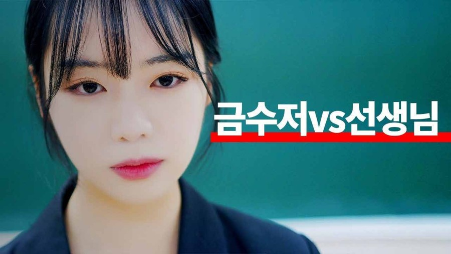
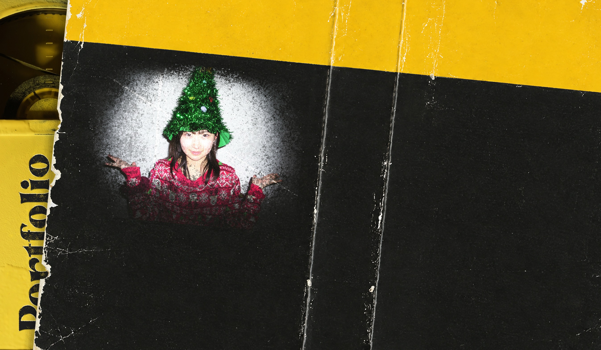
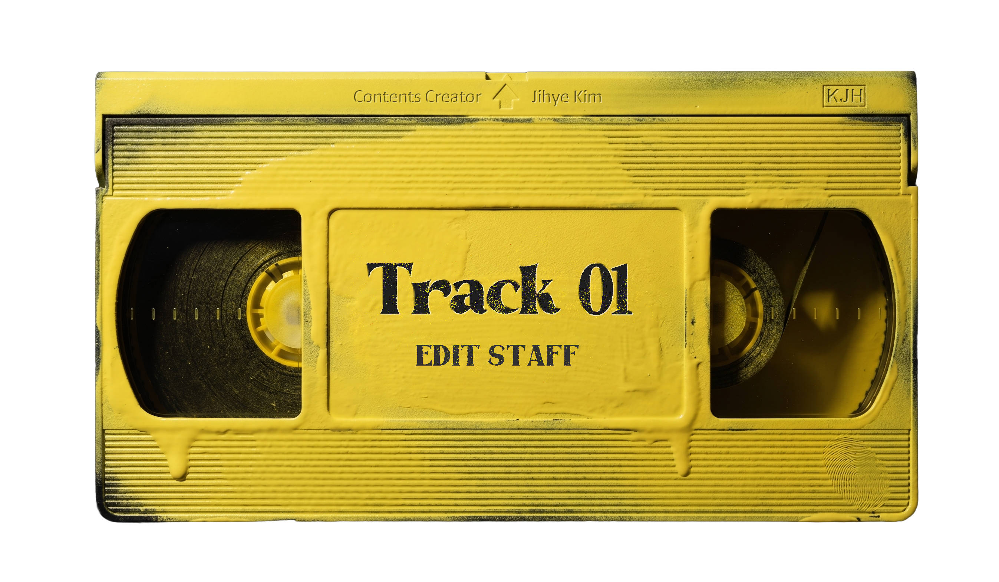
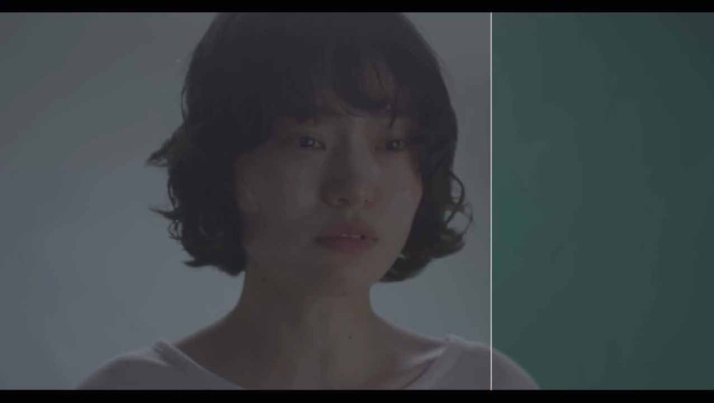
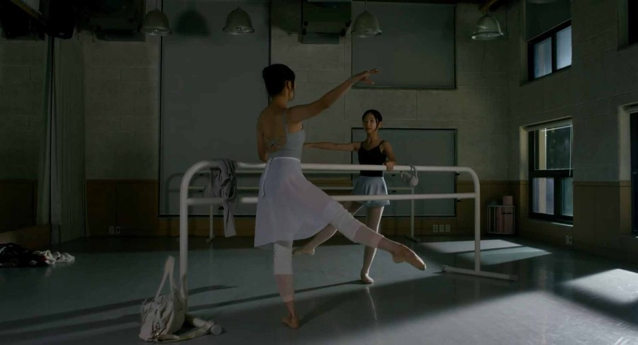
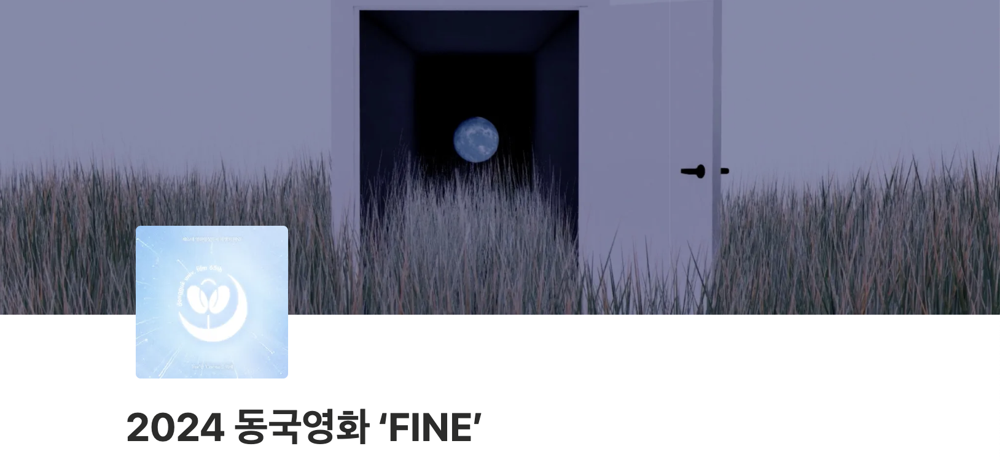
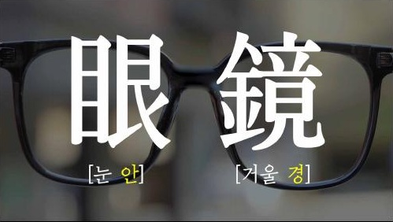

유튜브 웹드라마 채널 ‘팡팡스튜디오’ 본편·Shorts 편집자이미지 미리보기 없음

유튜브 웹드라마 채널 ‘팡팡스튜디오’본편·Shorts 편집자
웹드라마 본편·Shorts 편집 · 인물 관계와 서사 흐름 구성

2003.08.26


웹드라마 본편·Shorts 편집 · 인물 관계와 서사 흐름 구성



단편영화 편집감독 참여

학과 행사 기획·총괄 · 대면식 및 신입생 영화 제작 기초 교육 준비 · Notion 기반 월별 업무·일정 관리
상영작 검수 및 상영 진행
학생회 예산 운영 및 관리

지하철 역명 속 역사 소개 숏폼 · 2026 한국교통연구원 삶 속의 교통 이야기 공모전 장려상
2026 장려상
2024 동국대학교 Dream PATH 취업포트폴리오 경진대회 장려상
2024 장려상
2020 KYMF 대한민국청소년미디어대전 공익광고 부문 최우수상
2020 최우수상